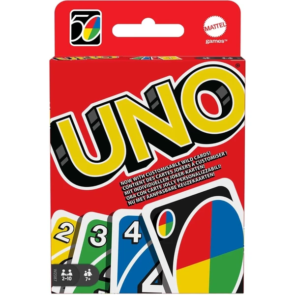
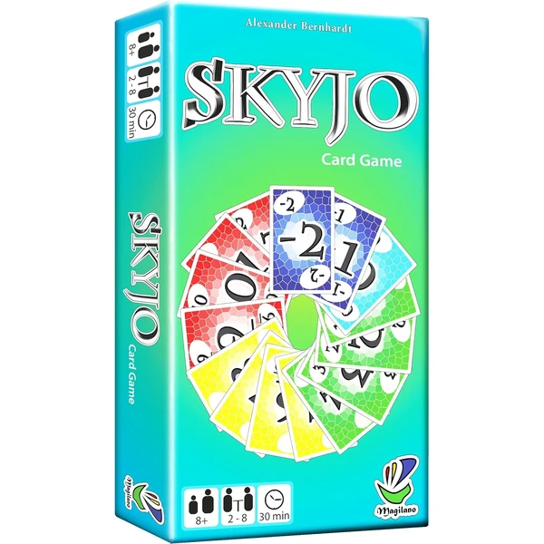
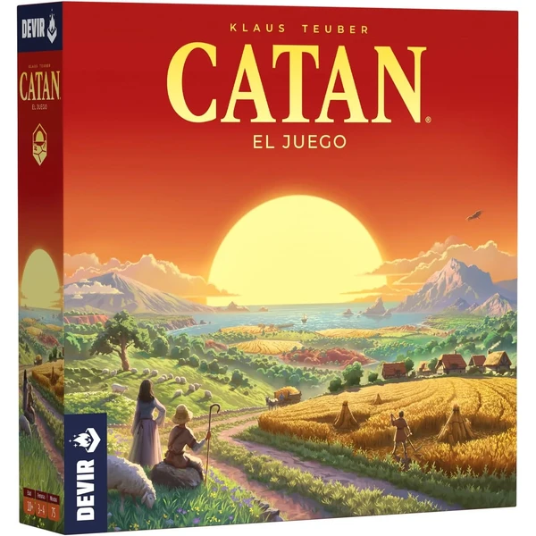
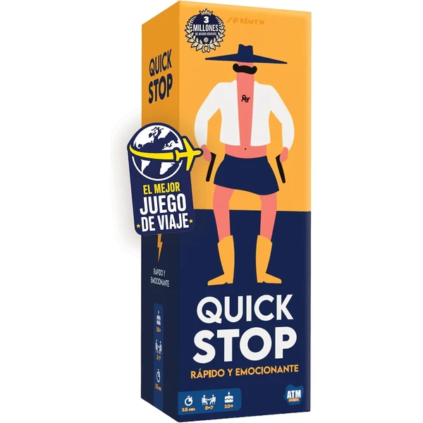
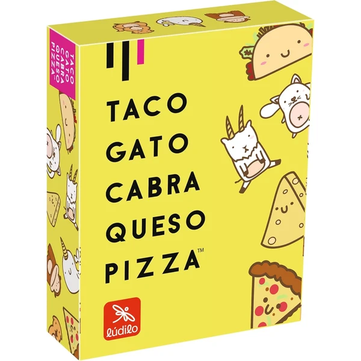
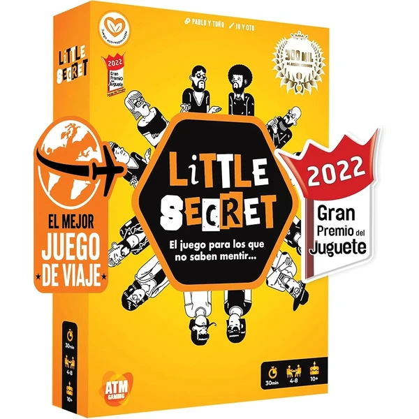
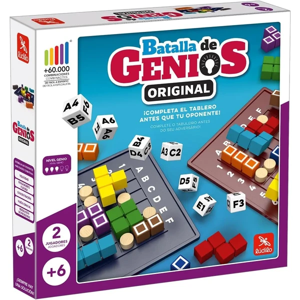
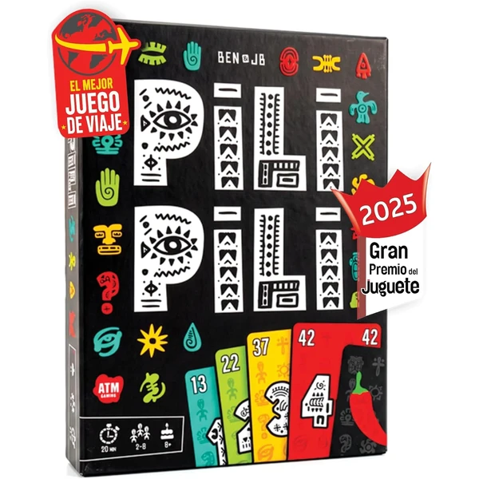

UNO Original
El clásico juego de cartas de emparejar colores y números, con cartas especiales que añaden giros inesperados a cada partida. Fácil de aprender y perfecto para jugar en familia.
⭐ ¿Por qué nos gusta?
- ✔ Reglas sencillas, ideal para toda la familia.
- ✔ Cartas especiales que dan giros a la partida.
- ✔ Partidas rápidas, para 2 a 10 jugadores.
💬 Lo que más destacan las familias
Muchas familias coinciden en que es un valor seguro que nunca falla, con partidas rápidas que se pueden repetir varias veces seguidas. El factor sorpresa de las cartas especiales mantiene el interés incluso después de muchas partidas.
Ver en Amazon

SKYJO Juego de Cartas
Un juego de cartas en el que hay que conseguir la menor puntuación posible descubriendo, intercambiando y recogiendo naipes. Combina cálculo mental, estrategia y un punto de suerte.
⭐ ¿Por qué nos gusta?
- ✔ Reglas simples, partidas de unos 30 minutos.
- ✔ Practica el cálculo mental de forma natural.
- ✔ Para 2 a 8 jugadores, ideal en grupo.
💬 Lo que más destacan las familias
Entre los comentarios más habituales aparece lo adictivo que resulta, con ganas de jugar "una partida más" una y otra vez. También se valora que combine suerte y estrategia a partes iguales, sin que nadie se sienta en desventaja.
Ver en Amazon

Catan Juego de Mesa
Un clásico de estrategia y comercio en el que hay que gestionar recursos y negociar con el resto de jugadores para construir asentamientos. Ganador del premio Spiel des Jahres.
⭐ ¿Por qué nos gusta?
- ✔ Estrategia y negociación en cada partida.
- ✔ Premio Spiel des Jahres al mejor juego.
- ✔ Partidas de unos 75 minutos para 3-4 jugadores.
💬 Lo que más destacan las familias
Se repite bastante el comentario de que es de los pocos juegos que realmente engancha a toda la familia por igual, incluidos los adultos. La parte de negociación entre jugadores es lo que más se menciona como diferencial.
Ver en Amazon

QuickStop Juego de Letras
Un juego de velocidad en el que hay que responder antes que los demás a temas disparatados que empiezan por una letra concreta. Reglas explicadas en un minuto y partidas de 15-30 minutos.
⭐ ¿Por qué nos gusta?
- ✔ Reglas explicadas en solo un minuto.
- ✔ Temas divertidos y originales para responder.
- ✔ Partidas rápidas, de 2 a 7 jugadores.
💬 Lo que más destacan las familias
Lo que más suele gustar es lo rápido que engancha, con partidas cortas que invitan a repetir sin parar. Los temas disparatados generan bastantes risas incluso entre quienes no suelen jugar a juegos de mesa.
Ver en Amazon

Taco Gato Cabra Queso Pizza
Un juego de cartas frenético en el que hay que recordar la secuencia de palabras y ser el más rápido en reaccionar cuando coincide con la carta. Partidas de unos 10 minutos, ideales para repetir.
⭐ ¿Por qué nos gusta?
- ✔ Partidas de solo 10 minutos.
- ✔ Mejora concentración y velocidad de reacción.
- ✔ Para 3 a 8 jugadores, muy dinámico.
💬 Lo que más destacan las familias
Una característica muy mencionada es lo rápido y frenético que resulta, generando muchas risas por los despistes de última hora. El tamaño compacto también se valora para llevarlo de viaje.
Ver en Amazon

Falomir Qué Soy Yo
Un juego de adivinanzas en el que cada jugador lleva una carta en la cabeza que todos ven menos él, y debe hacer preguntas para descubrir qué es. Fomenta el vocabulario y el pensamiento deductivo.
⭐ ¿Por qué nos gusta?
- ✔ Fomenta el vocabulario y la deducción.
- ✔ Formato divertido: adivinar mediante preguntas.
- ✔ Fácil de jugar en cualquier reunión familiar.
💬 Lo que más destacan las familias
No es raro encontrar comentarios sobre lo entretenido que resulta ver las caras de sorpresa al ir descartando posibilidades. Es un juego que suele sacar muchas risas incluso en grupos que no se conocen demasiado.
Ver en Amazon

Little Secret Juego del Impostor
Un juego de deducción y palabras secretas en el que hay que descubrir quién es el impostor entre los jugadores. Ganador del Gran Premio del Juego 2022 en la categoría de faroles.
⭐ ¿Por qué nos gusta?
- ✔ Ganador del Gran Premio del Juego 2022.
- ✔ Combina deducción, intriga y faroles.
- ✔ Partidas de unos 30 minutos, para 4 a 8 jugadores.
💬 Lo que más destacan las familias
Muchos padres coinciden en que genera muy buen ambiente en reuniones familiares, con mucha intriga sobre quién es el impostor. El formato de faroles añade una capa extra de diversión que no se cansa con las partidas.
Ver en Amazon

Ludilo Batalla de Genios
Un rompecabezas de madera para dos jugadores con más de 60.000 combinaciones distintas, premiado como mejor juguete de 2020. Desarrolla visión espacial, velocidad y planificación.
⭐ ¿Por qué nos gusta?
- ✔ Más de 60.000 combinaciones distintas.
- ✔ Premiado como mejor juguete de 2020.
- ✔ Desarrolla visión espacial y planificación.
💬 Lo que más destacan las familias
Se repite bastante el comentario de que la variedad de combinaciones hace que nunca se repita una partida igual. El formato de duelo entre dos jugadores añade un punto de competición que engancha bastante.
Ver en Amazon

Party & Co Junior
Un juego de mesa por equipos con cinco pruebas distintas: palabras prohibidas, preguntas, dibujo, mímica y sonidos. Pensado para reuniones familiares con más de un equipo jugando.
⭐ ¿Por qué nos gusta?
- ✔ Cinco pruebas distintas en un solo juego.
- ✔ Se juega por equipos, ideal en grupo grande.
- ✔ 400 tarjetas con 2.000 pruebas incluidas.
💬 Lo que más destacan las familias
Lo que más suele gustar es la variedad de pruebas, que evita que la partida se haga repetitiva. Es una opción popular para reuniones familiares numerosas, ya que admite hasta cuatro equipos.
Ver en Amazon

PILI PILI Juego de Apuestas
Un juego de mesa rápido basado en apostar cuántas bazas se van a ganar, con cartas de misión que hacen única cada partida. Combina estrategia y faroles en partidas ágiles.
⭐ ¿Por qué nos gusta?
- ✔ Combina estrategia, apuestas y faroles.
- ✔ Cartas de misión que varían cada partida.
- ✔ Reglas simples, partidas rápidas para 2 a 8.
💬 Lo que más destacan las familias
Entre los comentarios más habituales aparece lo bien que funciona como juego de sobremesa, con partidas ágiles que no se alargan demasiado. Las cartas de misión aportan variedad para que no se vuelva repetitivo.
Ver en Amazon